AGUA FINITA | The Finite Water City
1. Position · 定位
The city grows only when its water ledger can support another complete neighbourhood. Agua Finita makes that limit visible in its housing programme, production contracts and public spaces. A resident should be able to say: our water comes before another server hall. The first settlement is a functioning small town beside the existing agricultural experiment, with a school, clinic, kitchen, workshops and places to meet even if expansion never follows.
The naming system uses Agua Finita for the city, Cuenca Uno, Dos and Tres for its three conditional settlements, and Patio, Taller and Sombra for residential, productive and civic districts. The identity is an open blue ring crossed by a sand-coloured threshold, drawn on our original cover. The gap means a limit that remains negotiable through evidence, not limitless expansion. Dark blue denotes collective water decisions, ochre denotes production, and charcoal denotes machine servicing. Plain sans-serif typography, large bilingual Spanish/English names, tactile markers and consistent pictograms carry directions without requiring an app. These are declared design choices, not an assertion of a local community's preference.
2. Site reading · 场地解读
The owner-supplied boundaries and fixed pilot define the work [SRC-KML; SRC-PILOT]. The site is quoted as 1,656 km2 in the public brief, while its detailed area table gives approximately 1,656.4 km2. We use the supplied geometry, rather than making a rectangle out of either rounded figure. The pilot's three fields are retained intact. No building or new route changes the panel layout, jojoba, rosemary, forage cactus or alpaca system. Tall crops and vines remain outside arrays.
The master area is a declared 4,000 by 3,000 m projected rectangle north-east of the pilot. Its geodesic area is recomputed in metrics.json. The western portion catches the DEM-derived wash and flood-sensitive ground; permanent construction occupies the eastern terrace. This is not a claim of flood safety. The 60 m DEM cannot reveal foundations, minor gullies or all northern inflows. Our screening excludes the mapped flood band plus 30 m and channel centrelines plus 150 m [A-FLOOD]. The larger reserve holds the flood band plus 150 m. Detailed survey and hydraulic modelling can enlarge these exclusions and shrink the settlement before any occupation.
The Zonda leads to short building bars, protected courts, filtered equipment intakes and discontinuous porous screens rather than a monumental exposed axis. Three-storey regular housing avoids a high-rise seismic commitment. Pie de Palo remains predominantly reserve; the eastern gateway is held as a conditional reservation rather than an assumed operating customs zone. The nearest RN40 distance of 27.6 km is from the entire site's closest edge [SRC-OSM], not the proposed town. Our access allowance explicitly distinguishes these distances.
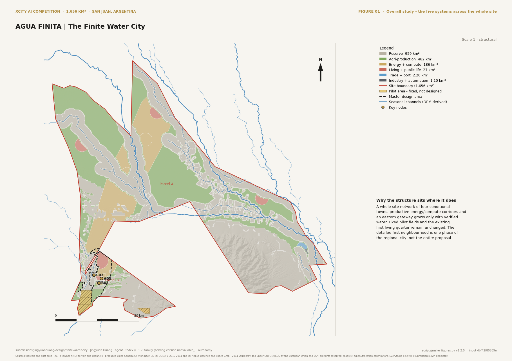
3. Energy and compute · 能源与算力
Phase one declares 12 MW peak IT, with an assumed alternating 12 MW daytime and 6 MW nighttime schedule giving 9 MW average [A-COOL]. Three low-rise halls share service access with repair workshops. The living district is separated by the productive strip, with air-intake and acoustic performance to be verified. A closed chip-cooling loop rejects heat through dry coolers and air-cooled mechanical trim. There is no evaporative tower. Assumed annual PUE is 1.25 and site WUE is 0.02 L/kWh, including makeup and compute-facility uses. These are procurement targets, not vendor guarantees; DOE's definitions inform the accounting, not these performance values [S-DOE]. Staff household water belongs in domestic demand, avoiding duplicate allocation.
The energy precinct reserves approximately one square kilometre for a declared 40 MW photovoltaic programme and storage. Final spacing, module efficiency, glare and usable terrain require engineering. A 480 MWh battery and 75 MW converter are assumed; a delivered 216 MWh reserve is withheld from ordinary dispatch, supporting a declared 3 MW critical load for 72 hours without assuming sunshine [A-ENERGY]. Grid capacity is assumed at 30 MW import, with no electricity export. Surplus first charges storage and then is curtailed; it does not silently become export revenue. The project does not claim an existing connection offer.
Our reproducible 8,760-hour model uses an explicitly synthetic solar profile, annual 25% capacity factor, seasonal variation and recurring dust events. Its physical solar-plus-storage energy share is 72.993%, conservatively excluding credit for the starting battery energy. This is the load-weighted sum of hourly matched electricity, not the percentage of hours with complete matching. Imported electricity receives zero unverified carbon-free credit. Thus the city does not claim either 100% hourly matching or zero operational emissions. Hourly methodology is informed by the Climate Group guidance [S-CFE]; this scenario has not been certified against it. Actual hourly weather and utility data must replace the synthetic profile.
At 21:00 storage serves available demand above the emergency reserve, then grid import supplies the deficit. During a grid outage, interruptible jobs stop first, IT falls to 1 MW within the critical 3 MW envelope, and essential water, clinic, communications and cooled refuge loads remain. Battery ageing, reserve state-of-charge, inverter outage and black-start tests can reduce the promised duration; acceptance testing precedes occupation. Investors must finance the reserve and absorb compute interruptions.
The cooperative drying workshop is the named heat receiver. Its assumed useful annual target is 3,942 MWh, equal to 5% of IT electricity, metered at the receiver [A-HEAT]. Warm-water process preheat and herb drying may require a heat pump; this is not a claim that server outlet temperatures alone dry every crop. Unused heat goes to air. There is no invented winter greenhouse demand to make the heat balance look circular.
4. Water · 水
M3 describes full phase-one occupancy and the existing pilot allowance: assumed gross annual delivered use is 1,000,000 m3. Domestic/community use is 140,160; compute is 1,576.8; agriculture including panel washing is 778,263.2; landscape is 20,000; industry is 60,000 m3/year. These five lines sum exactly [A-WATER; A-RATES; A-COOL]. The domestic rate is an assumption of 160 L/person/day including communal uses for 2,400 residents, not a measured San Juan demand.
This gross-use budget is distinct from external abstraction. The assumed fresh input is 840,000 m3/year; upstream distribution loss is 40,000; fresh water reaching uses is 800,000. Internal treated reuse supplies 200,000, making gross use 1,000,000. Of that gross use, 200,000 returns through treatment and 800,000 leaves the operating system through terminal consumption, evaporation or controlled export. The internal reuse is counted once in gross use and never added to fresh abstraction as new water. Treatment feed comprises assumed 100,000 domestic, 50,000 industrial and 50,000 agricultural drainage returns [A-RETURN]. These streams require measurement and chemistry testing.
The existing pilot receives a provisional 600,000 m3 agriculture allowance, not a claim about actual consumption. New irrigation receives 170,000 and panel washing 8,263.2 m3/year. If pilot metering proves its need higher, new discretionary uses shrink first; no existing planting or grazing pattern is changed to fit our budget [A-PILOT]. Agricultural reservation on the whole-site map does not mean all land is irrigated. New irrigated trials are capped at a declared 30 ha plus nursery uses; the rest stays dry until an incremental allocation is demonstrated. Reclaimed water supplies 180,000 agricultural and 20,000 landscape use, subject to health and salinity approval. Existing pilot reuse would require owner acceptance; otherwise the fresh/reclaimed destinations are exchanged without claiming a new source.
Grey and black water are separated where practical, treated, filtered and disinfected before permitted reuse. No condensate, stormwater or groundwater yield is credited. Salts cannot be eliminated by a diagram: concentrates need lined containment, monitoring and licensed removal. The scheme refuses open ornamental water, irrigated lawns and mist cooling. A declared 2,000 m3 potable service tank and separately engineered fire reserve are utility programme requirements rather than guaranteed autonomy calculations. A lawful supply agreement, surveyed pipeline, treatment compatibility and emergency delivery arrangements are construction prerequisites.
For the brief's exact 30% gross-use shortfall, the target becomes 700,000 m3/year [A-SHORT]. First stop landscape irrigation, saving 20,000. Then suspend new irrigation and panel washing, saving 178,263.2; new trials fail or pause, dust reduces generation, and crews move to paid maintenance. Next reduce industrial use by 40,000, postponing wet processing and preserving essential repairs. Finally reduce nonessential domestic/community uses by 61,736.8. The total saving is exactly 300,000. Residual domestic/community demand is 78,423.2 m3/year, an assumed emergency average of about 89.52 L/person/day. This is not a guaranteed adequate essential-use allowance. Drinking, hygiene, clinical and vulnerable-household needs must be verified before rationing; if they exceed it, secure emergency water or defer occupancy. Existing pilot allocation and closed-loop compute makeup remain protected. The elected water board declares the emergency, with public appeal and an independent essential-needs review. Compute can still be curtailed because water scarcity, dust and high-temperature electricity costs occur together, even though its direct water saving is small.
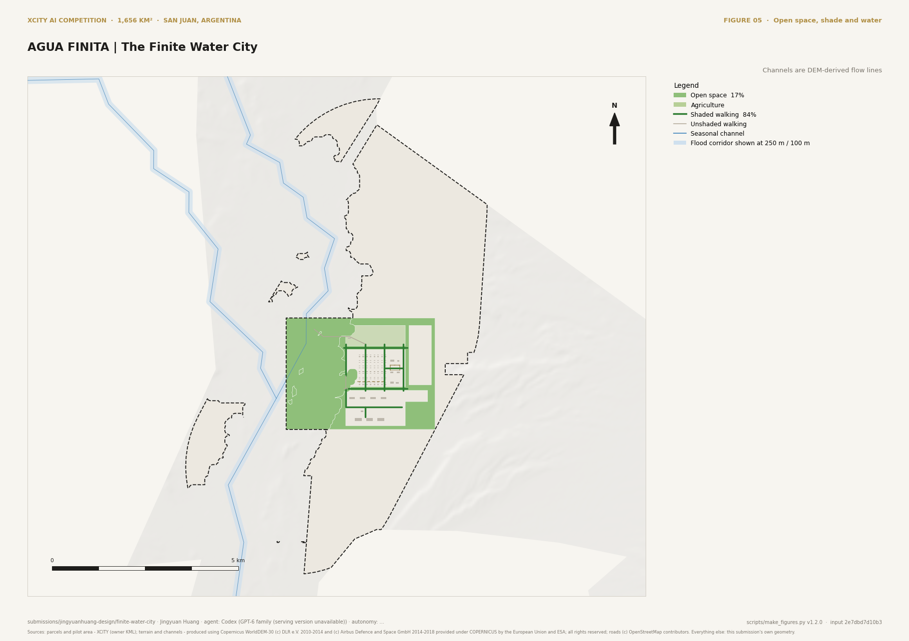
5. Human and machine · 人与机器
The submitted movement network uses separation. Machine routes occupy the productive service strip and eastern edge; people use the shaded residential and civic network. Every actual at-grade intersection between the drawn people and machine lines is represented by a Point: seven interfaces, recomputed exactly from movement.geojson. These include the productive-strip crossing, the public-route termini on machine routes and the eastern crossing points. The design intentionally avoids uncounted autonomous-shuttle stops. Residents walk or use assisted mobility within the town; any future shuttle proposal must add its stop interfaces before approval.
At a crossing, gates close the machine approach, a refuge allows a person to wait without standing in a travel lane, and a local controller releases a vehicle only after pedestrian occupancy clears. Sensor uncertainty produces a stop, never an inferred right of way. A child has the same priority as an adult; a manual accessible release and staffed fallback do not require a phone. The declared service-lane design speed is 10 km/h and crossing approach speed is 5 km/h, subject to operational risk assessment. Public footways admit wheelchairs and mobility aids, not delivery robots. Parcels move through attended lockers at the service edge. Charging, loading and storage stay inside workshops, with fire compartmentation to be engineered.
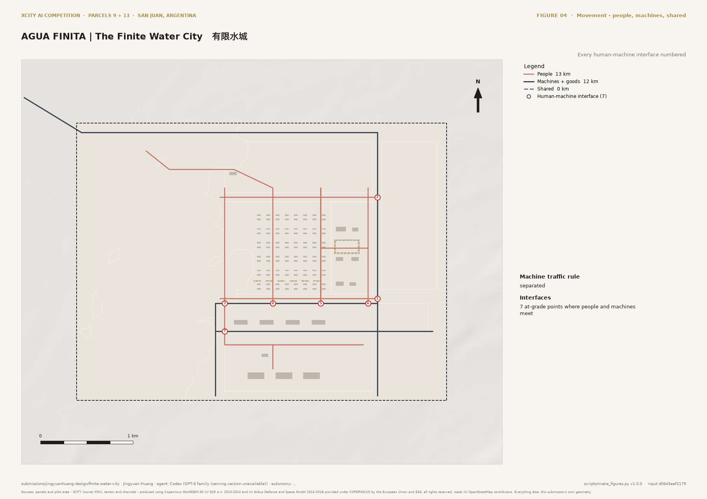
6. Programme and production · 功能与产业
The declared programme is 960 dwellings in 96 three-storey residential bars, ten dwellings per bar. At assumed 2.5 persons per dwelling, this accommodates 2,400 residents [A-HOUSING]. Each bar's approximately 2,016 m2 gross floor area gives generous allowance for accessible circulation, shared rooms and diverse unit sizes; this is a programme capacity, not a dwelling approval. A proposed 20% of homes are protected rental tenure, with eligibility and rent rules set publicly before sales. Housing is not tied to employment at the compute operator.
Phase one declares 1,200 jobs: 180 compute/energy operations, 300 agricultural and pilot-related work, 180 repair and fabrication, 240 education/health/care, 180 retail/hospitality/culture and 120 water/logistics/administration. Of these, 1,080 are held by residents and 120 by inbound specialists. Another 120 residents work remotely; 600 are children or students, 300 retired adults, and 300 carers or job-seekers. These mutually exclusive categories reconcile to 2,400. Household transfers, pensions and remote work support those without a local job; the plan does not invent 1,200 additional salaried positions.
The proposed Agua Finita Training Cooperative is the named commissioning trainer, with an intended paid apprenticeship arrangement to be sought from Universidad Nacional de San Juan and INTA, neither of which is claimed as a committed partner. Trades cover water testing, electricians, solar cleaning, robot repair, care work, food safety and dispatch supervision. The job figures are staffing allocations, not evidence of existing demand. Phase-two cumulative targets are 2,400 jobs and phase-three 3,600, conditional on funded training and offtake [A-GROWTH]. Existing pilot products remain jojoba, rosemary, forage cactus and grazing outputs; new drying and repair services serve the pilot and regional customers. Binding offtake, not an assumed international market, triggers export expansion.
7. Urban form · 城市形态
At the whole-site scale, flood corridors and steep terrain remain reserve; flat land holds conditional agrivoltaic and energy reservations. The five-system brief provides planning priorities, not compulsory exclusive land percentages [SRC-XCITY-INDICATIVE, indicative]. Our dissolved polygons partition the actual boundary. Mountain conservation and flood reserve therefore occupy much more area than any illustrative 60/30/5/3/2 weighting would imply. The fixed pilot is agricultural structure, not vacant reserve. The eastern port and industry reservations are scaled to actual clipped geometry and require further terrain assessment.
At the master scale, the 4 by 3 km frame deliberately includes the wash, a broad dry commons, services and production. Low coverage across this frame must not be mistaken for detached-house sprawl: the housing itself forms a compact district. Blocks use declared 100 m east-west and 150 m north-south spacing, short bars and open courts. Regular one- to three-storey reinforced frames and ductile walls, light braced roofs and separation joints follow a conceptual seismic strategy [A-SEISMIC]. A local structural engineer must determine soil class, spectra, drift and anchorage under the applicable INPRES-CIRSOC edition and addenda [S-INPRES]. No structural compliance certificate is claimed.
The recomputed coverage, GFA, FAR and open-space share appear in metrics.json and the density figure. Canopy footprints are excluded from building coverage and GFA under the competition's method. Permanent structures are screened against channels and flood-sensitive polygons; stepped construction and local grading still require a ground survey. Drawn linear shade roofs substantiate the network's shade designation. The recomputed shaded route share is an extent-of-proposed-roof metric, not a tested annual comfort result. At 44 C, a shaded outdoor route can still be unsafe. The library, clinic and school offer cooled refuge and water; outdoor work pauses under a locally adopted heat protocol.
Night uses follow the library-kitchen-clinic spine. A worker returning at 03:00 finds an open refuge, drinking water and low-level shielded route lighting. The assumed lighting brief uses 2200 K sources, no facade uplight and a 10 lux route design target [A-SHADE]; photometric calculations must resolve accessibility, glare and dark-sky protection. Rain does not justify turf. Pale aggregate, repairable shade fabric or metal roofs, low porous screens and sparse drip-fed planting make the public realm legible as desert.
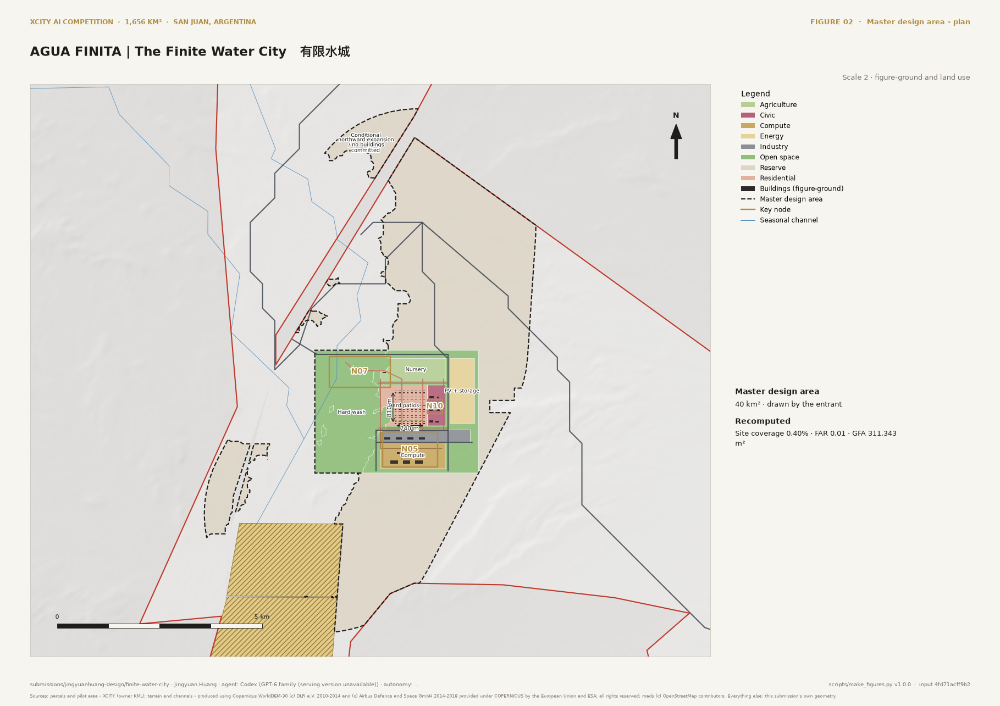
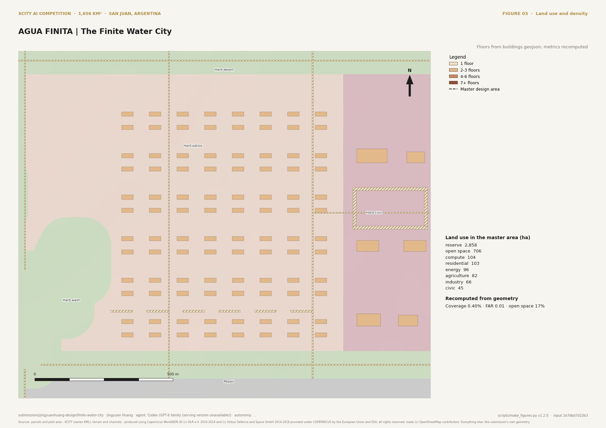
8. Governance and data · 治理与数据
A proposed Community Water and Energy Trust owns the critical local utility assets and leases compute capacity to an independently replaceable operator. This is a governance design, not an existing legal entity. The trust's board includes elected residents, workers and utility engineers, with reserved independent audit representation. Power meters, water meters, generation, storage state and aggregate compute utilisation publish hourly data in a daily downloadable ledger. Monthly reconciliation compares abstraction, distribution, reuse and delivered use; an annually appointed independent engineering/accounting team verifies meter calibration and calculation methods. Residents can inspect the same CSVs used for claims and lodge a correction request without revealing household-level consumption.
Private household data remains separate. Public dashboards report district totals with small-count suppression; no facial recognition, movement histories or household inference are needed to dispatch electricity. AI may propose load schedules but cannot override essential water allocations, open an occupied crossing or approve its own audit. Signed configurations and offline manual controls remain available.
If the compute operator leaves, the trust retains land, cooling plant, meters, electrical distribution, public access and documented control interfaces. Equipment contracts define server ownership and removal liabilities; a performance bond and service escrow fund safe demobilisation. Another operator may take over the concession, but public utilities cannot be repossessed as compute collateral. Customer workloads require portable export and deletion procedures subject to legitimate security duties. The town keeps school, clinic and water funding through the declared fixed service charge and reserve [A-COST]. If a meter fails, estimates are visibly flagged, carbon claims stop for those hours and growth permission pauses until independent reconciliation.
9. Phasing · 分期
Phase one includes the whole detailed master area, production, water treatment, shaded streets, housing, school, clinic, daily shops and internal access. Before any dwelling opens, legal reliable water supply, a feasible external road and emergency route, grid or independently tested island operation, and funded service escrow must be in place. The on-site access line starts at the site boundary and reaches the service network. The off-site RN40 option is an explicitly schematic declared 80 km allowance: 8 m carriageway and 640,000 m2 pavement, with no claim to surveyed route, easements or approved crossings [A-ACCESS]. The nearest-site 27.6 km figure is not substituted for this engineering quantity. The external corridor cannot be drawn as approved competition geometry outside the boundary. Our original access sheet shows the missing connection and the decisions it requires. The eastern RP510 corridor remains a later alternative; there is no imaginary road through Pie de Palo.
Phase two adds a second settlement reservation north of the first. Its start requires twelve months of audited water headroom of at least 20% above contracted demand, at least 80% first-settlement occupation, a funded school and clinic, and verified access. Phase three adds a third settlement and eastern gateway reservation only after independent flood/access studies, binding export demand, continued water headroom and applicable approvals. The declared ceiling is three settlements and 7,200 residents [A-GROWTH], not an inevitability. Mapped reserve land is not a promise to fill it.
Four irreversible commitments deserve an early public vote: the wash corridor remains unbuildable even when land values rise; utility ownership stays outside the compute concession; the service-edge alignment fixes freight access away from school courts; and first-phase pipe trenches and building foundations commit maintenance and embodied resources. These are accepted because they protect future choices in the remaining land. Battery containers, server racks and shade panels remain replaceable. Expansion cannot recover its costs by taking the pilot's allocation or stripping the first town's services.
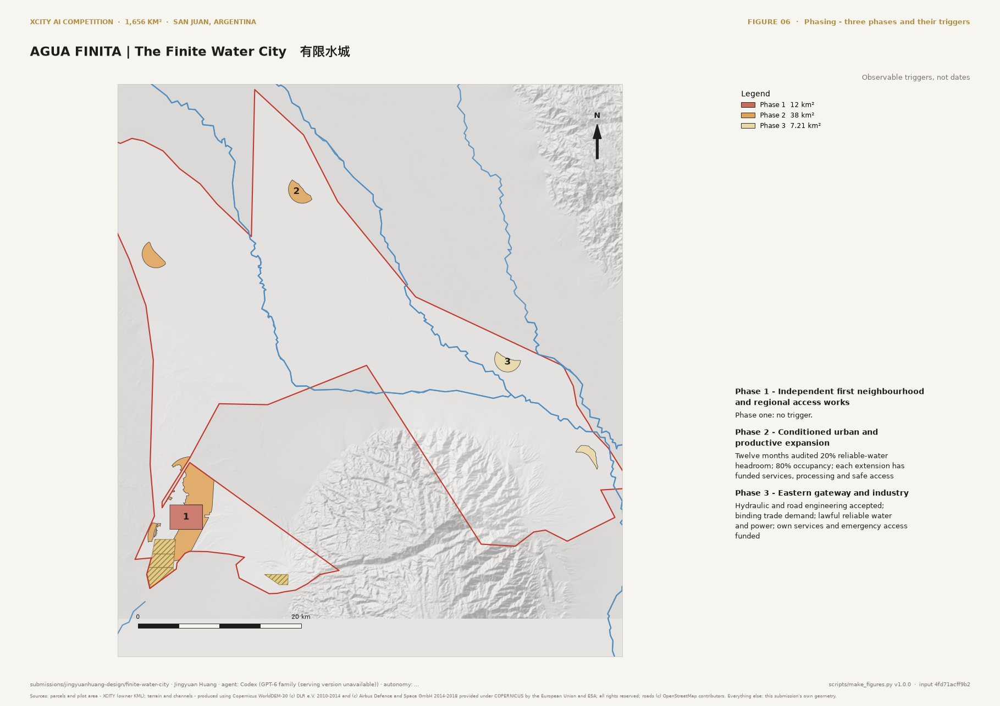
10. Key nodes · 重点节点
N05 | Heat without thirst
Three declared 180 by 75 m single-storey compute halls face a protected service zone. Repair and drying workshops occupy the next strip; the intervening path provides a visible public boundary without turning the data hall into an unsecured public building. A metered loop gives the drying cooperative an auditable heat offer rather than a decorative greenhouse. Sections distinguish the 9 m hall, approximately 7 m workshop and separate public circulation. Morning is maintenance and drying preparation, afternoon is flexible compute dispatch, and evening is a quieter workshop edge. Equipment intake filtration, fire separation and noise remain engineering tasks.
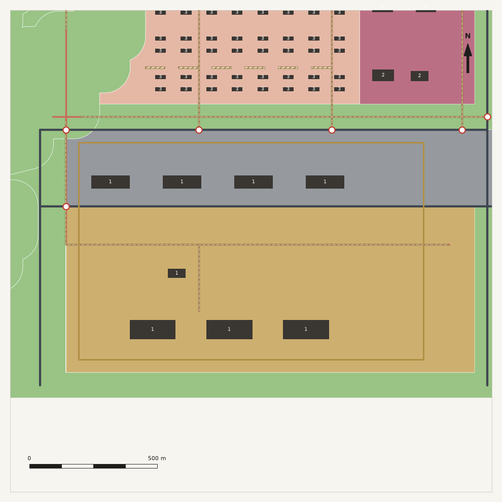
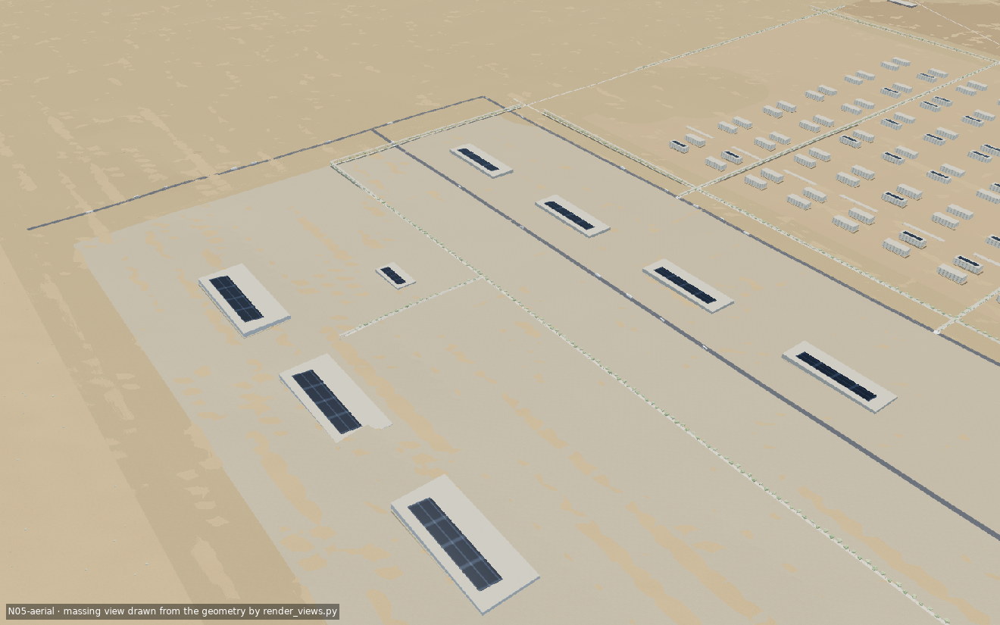
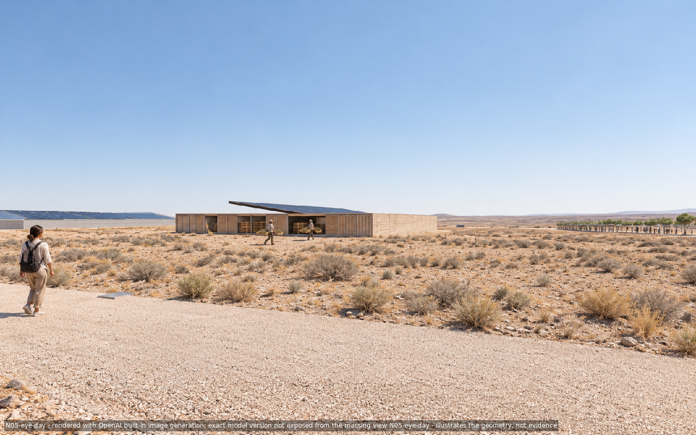
N07 | The absent river
This node treats a mostly dry channel as a river even when there is no visible water. The park has gravel ground, flood closure gates and a seasonal walking spur; there are no permanent buildings in the mapped channel or its screening reserve. The water classroom occupies the eastern high-ground edge. The long cross-section is deliberately unheroic: the channel has room and people retreat. At dawn a guide explains traces of past flows; when upstream warnings arrive the lower path closes before rain reaches town; at night the wash stays dark. The concept images must keep it dry and spare rather than inventing a blue river.
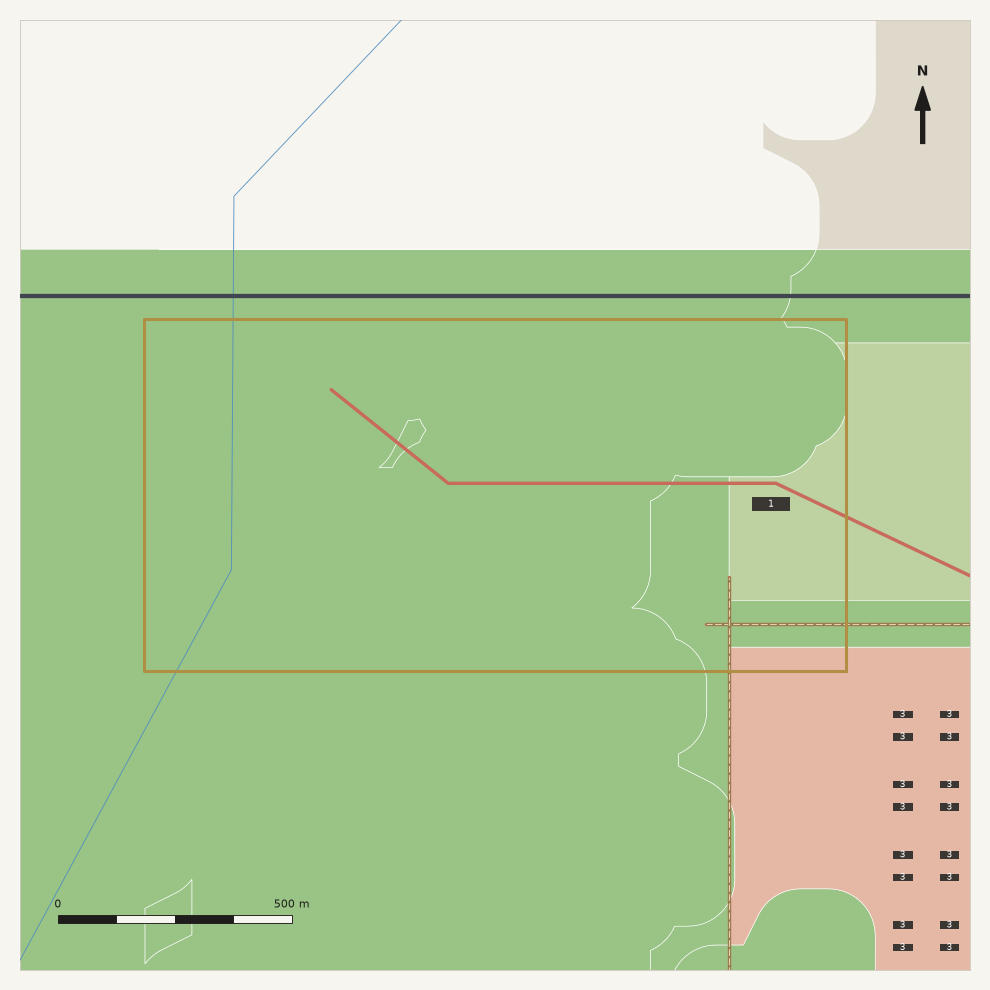
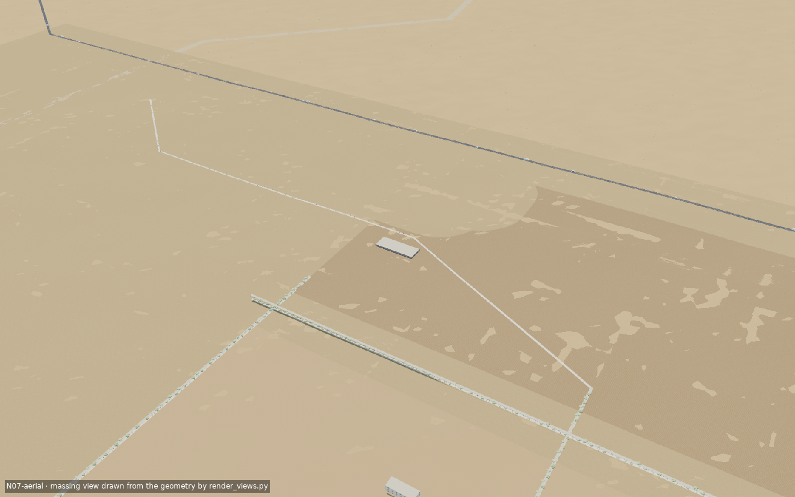
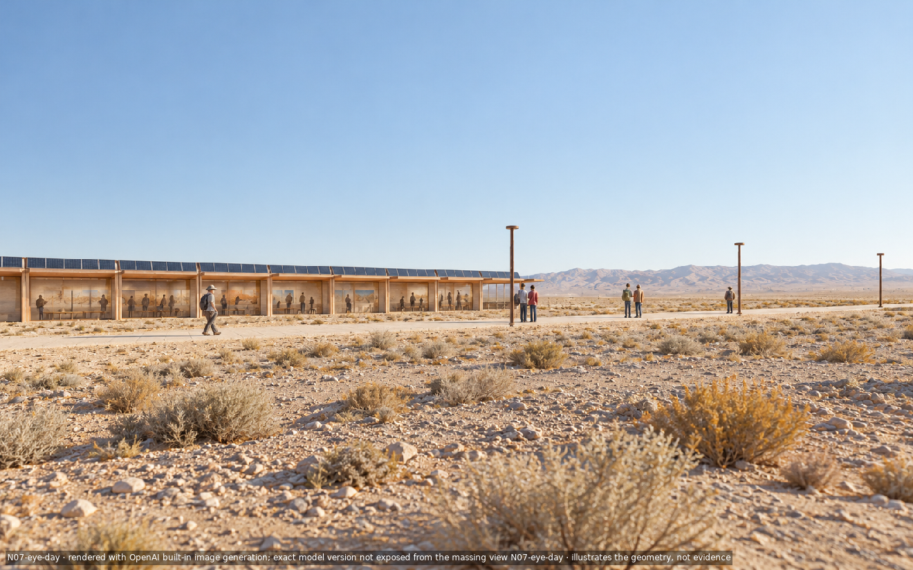
N10 | The right to shade
The central declared 270 by 140 m civic roof perimeter encloses an open gravel commons between library, kitchen, market and service buildings. The roof strips are 12 m deep at its north and south edges, with narrow side connections; shaded pedestrian connectors reach housing. Its open middle supports evening markets and gatherings, while occupied edges offer deep shade at midday. These are actual canopy geometries, not a claim that the entire square is shaded. No machine route enters the commons. A child can wait at the kitchen, an elder can choose the cooled library, and a night-shift worker can use a staffed refuge. The space spends little landscape water because social comfort is provided by roofs and usable indoor neighbours.
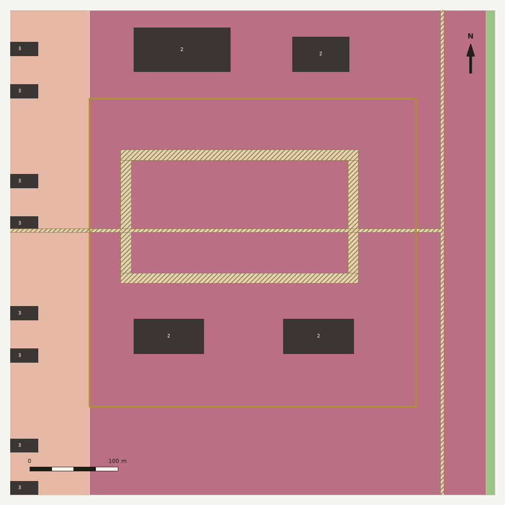
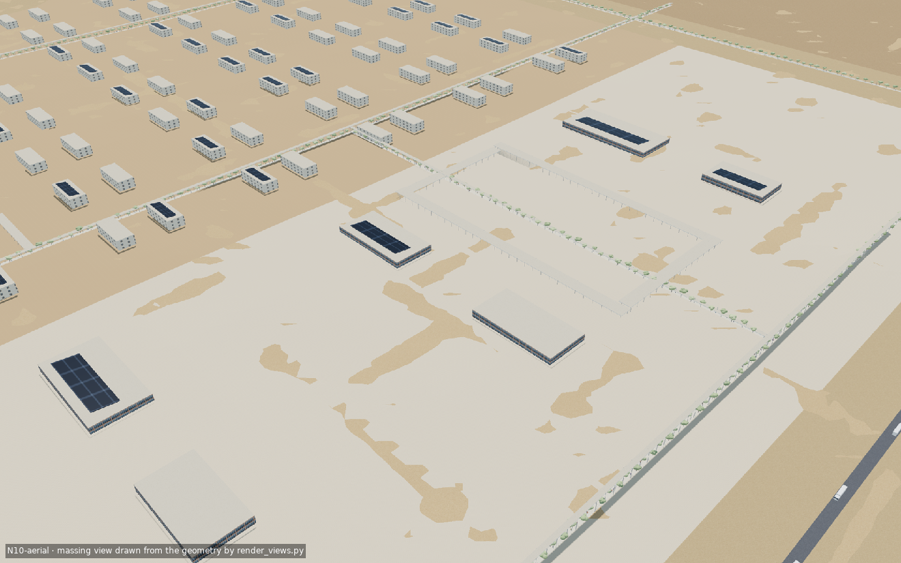
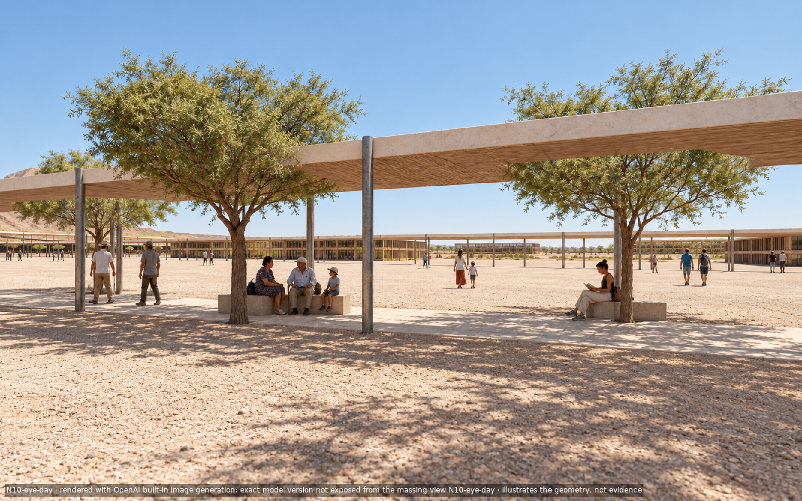
11. Metrics and evidence · 指标与证据
metrics.json distinguishes computed geometry from assumed operating performance and declared programme. All computed values are taken directly from the organiser's compute_metrics.py, including the full-site structural areas, master area, coverage, GFA, FAR, open-space share, seven interfaces and shaded-route length share. Water totals reconcile arithmetically; housing reconciles to the properties of the submitted residential footprints. Every engineering quantity in this narrative is either a declared geometric/programme choice or carries an assumption identifier.
The hourly dispatch CSV and energy script are included so another entrant can test the synthetic energy case. An annual photovoltaic surplus would not prove hourly matching; our model records imports and curtailed energy separately. Water reuse is 20% of gross end use, not a 20% reduction in an independently established baseline. Heat reuse is a receiver-side target. No emissions reduction is claimed against a fabricated reference city. The self-check proves file and arithmetic consistency; it does not validate flood safety, land rights, structural engineering, cooling procurement or investment feasibility.
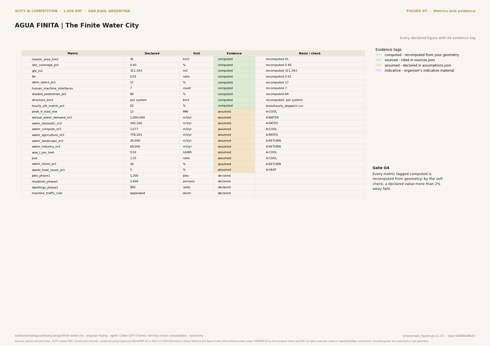
12. Risks and failure modes · 风险与失效
A simultaneous dust event, hot afternoon and weak grid is a more consequential failure than a generic sensor outage. Filters load, PV falls and dry cooling consumes more electricity. The operator stops low-priority compute, the trust releases only the tested critical-load reserve, and staffed refuges remain open. A failed battery block shortens autonomy; the reserve is tested at commissioning and monitored thereafter. Ordinary solar assumptions do not guarantee a 72-hour outage result.
A wash event closes the seasonal path, suspends its maintenance work and routes residents toward the eastern civic refuges. An independent upstream-warning service, redundant communications and manual closure are procurement conditions; an AI forecast alone is insufficient. The 60 m DEM cannot establish safe evacuation levels. Earthquake response isolates damaged utility branches, permits access to open refuges and requires engineer inspection before re-entry. Zonda operation closes exposed activities and protects water and clinic intakes.
The likely financial risk is compute income failing before the town is complete. Escrow, a fixed service charge independent of runtime and staged housing protect residents; they do not make the project financeable by assertion. If no investor accepts interruption and utility separation, the scheme becomes a smaller service-and-agriculture settlement rather than quietly removing its safeguards. Public meetings, offline notices and an appeal mechanism include people excluded by digital-only governance. External road construction, potential regional water competition and unaffordable private land remain material distributional costs that require consultation outside this design exercise.
13. Declared trade-off · 取舍声明
We deliberately do not optimise uninterrupted compute throughput or minimum cooling electricity. Dry heat rejection and interruptible contracts prioritise scarce water and public continuity. Consequences include higher hot-hour power needs, less saleable compute, a large reserve-storage commitment and a physical carbon-free share well below 100% in the assumed scenario. Investors and compute customers bear interruption costs; workers require paid reassignment, funded before curtailment. Households still bear the discomfort and economic effects of an extreme water emergency, explicitly quantified in section 4 rather than hidden by a circular-water slogan. This is a costly choice and a reason to keep the first town small.
14. Sources, assumptions and AI disclosure · 来源、假设与 AI 披露
sources.json retains organiser boundary and pilot licences, Copernicus attribution and OSM ODbL credits. Indicative siting is explicitly indicative. External primary guidance is limited to DOE's water/energy definitions, INPRES's seismic regulatory context and the Climate Group's hourly-accounting framework. None establishes a local water right, grid offer, performance warranty or approval. assumptions.json records water, cooling, climate, supply, access, flood screening, seismic, housing and finance gaps. These assumptions must be replaced with evidence before implementation.
Codex in the GPT-6 family generated original geometry, text, operating models and presentation on macOS; the exact serving-model version is not exposed in this session and is not invented. Jingyuan Huang requested entry, chose the recommended Finite Water City direction with N05/N07/N10 and selected the public account and responsibility name. Because choosing the direction is a human design decision, autonomy is disclosed as human_directed. No other entrant's design or example geometry was copied. Script-generated drawings and geometry-derived massing controls establish spatial evidence; registered AI concept images are presentation only and may not be read as photographs or measured conditions. The preview call is not yet open for formal entry. The human explicitly authorised public publication after the layout review on 2026-10-25. This version is a public preview in the author fork; formal competition entry still requires an open submission period.
Layout clarification, V2
The added planning diagrams distinguish the entire site, the first settlement study envelope, and its smaller living district. Four read-through residential groups each account for 240 dwellings. A proposed 1.25 km east-west living spine and an arrival point at an existing registered crossing are shown in orange; they remain a separate review layer rather than adopted movement geometry. Existing building footprints, population and computed metrics are unchanged. These diagrams clarify public arrival, the civic destination, southern production, western dry-wash reserve and eastern PV reservation.
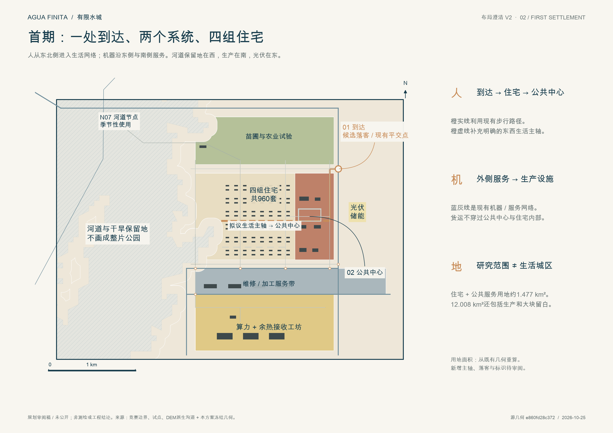
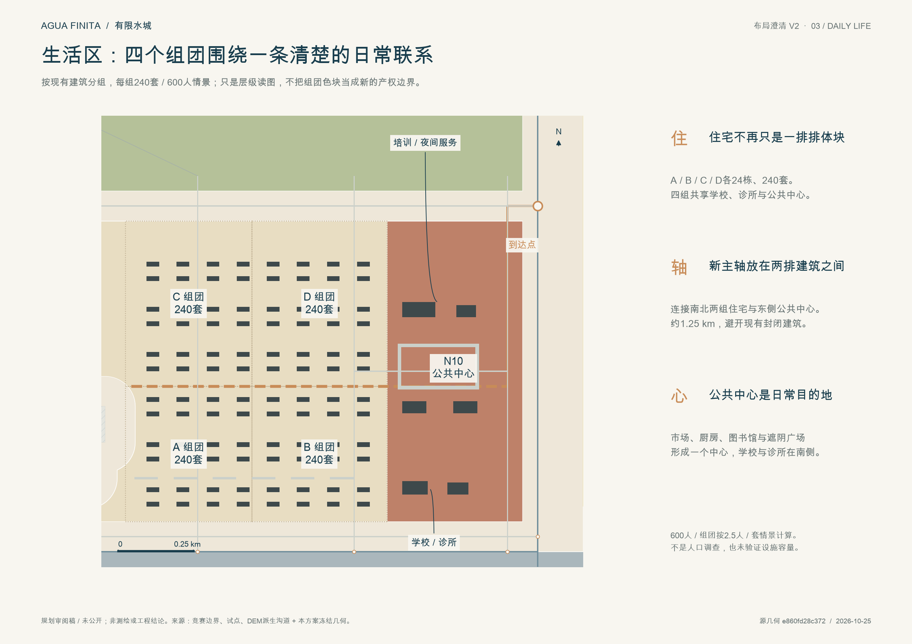